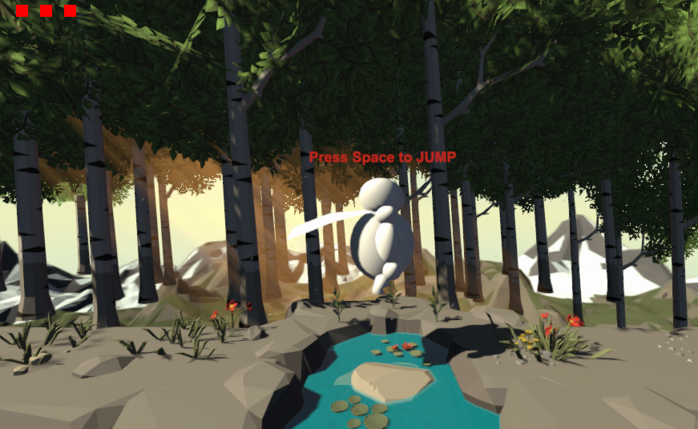

The tutorial level is the introductory area where the player gets introduced to the mechanics of the game. To meet this goal, we gave on-screen instructions that show the player the controls. We only implemented this for jumping however and not moving, health and death, traps or enemies. This was due to communication issues within the team slowing progress down.
The playable character is what the player controls during the game. He can run and jump in order to get around obstacles in their way. The player does not animate during these actions, but animation was more a stretch goal.
The traps in the game are one of the obstacles in the game that obstructs the player’s path. The trap that was implemented was the spike trap/pit. This trap is stationary and when the player touches them, the player dies. Other more advanced traps were to be implemented during later levels in the game after the player understands the initial trap concept.
The enemies in the game are the other obstacle in the game that obstructs the player’s path. The enemies are more dynamic than traps in that they interact with the world more. The enemy we implemented was an orc, a large and muscly humanoid. Due to implementation issues and time crunch, the orc only stands in the way and doesn’t interact otherwise.
The health and death mechanic are directly tied to the playable character. The character has a set amount of health and lose health when running into traps or enemies. Once the player loses all their health, they die and shows the death screen. The death screen allows the player to either respawn or exit the game.